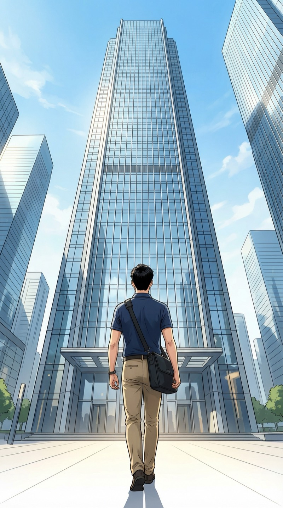
现实
清晨的陆家嘴，玻璃幕墙折射出刺眼的金光。
我站在华山资本大楼前，心跳开始加速。这是我第一次见投资人——三个月的创业，终于走到了这一步。
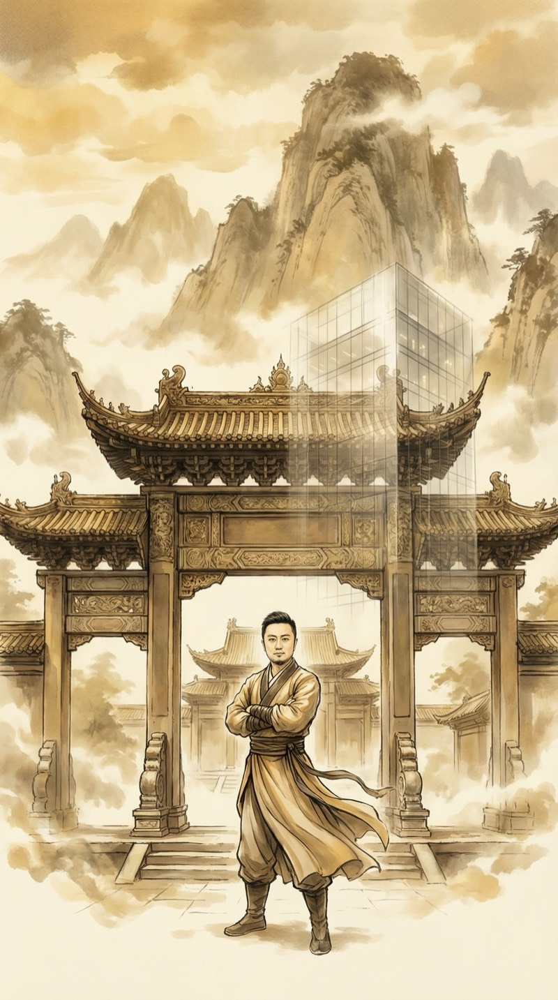
江湖
抬头看——华山资本。呵，华山派。
这大楼在我眼里，瞬间变成了巍峨的山门，云雾缭绕，松涛阵阵。走进去，就是踏入江湖。
现实
大理石地面映出我的影子。前台小姐姐微笑着示意我上三楼。
深吸一口气。我的demo昨晚调到凌晨三点，功能跑通了。应该没问题。应该。
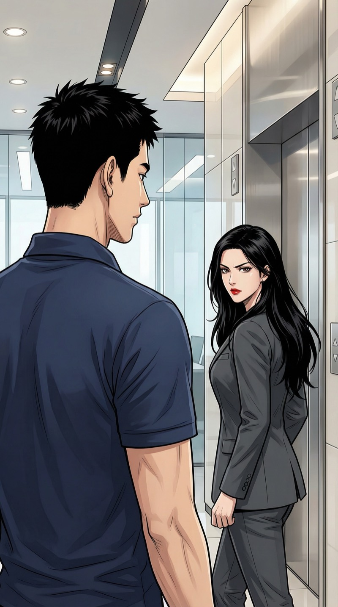
现实
电梯口，一个女人。长发，红唇，一身黑色套装，气场两米八。
我认得她。林可，DataEdge的CEO，我们最大的竞品。她怎么也在这？
江湖
好家伙，峨眉派掌门。起手式就带杀气。
那甩头的弧度，那微微上扬的嘴角——分明是峨眉剑法起手式，剑还没出鞘，杀意已经满溢。
决策点
她也看到我了。这一刻，我有两个选择——
⚔️ 决策一：初遇对手
A. 装没看见，保持神秘
B. 大方打招呼，展示风度
怂什么？江湖人行事，光明正大。
现实
"林总，久仰。朱江，NexusAI。"
我主动伸出手。她顿了一秒——显然没料到竞品CEO会主动示好。
现实
"嗯，知道你。"
她握了一下就松开，甩了下头发，径直走向会议室。
好嘛，三个字打发我。这女人，够狠。
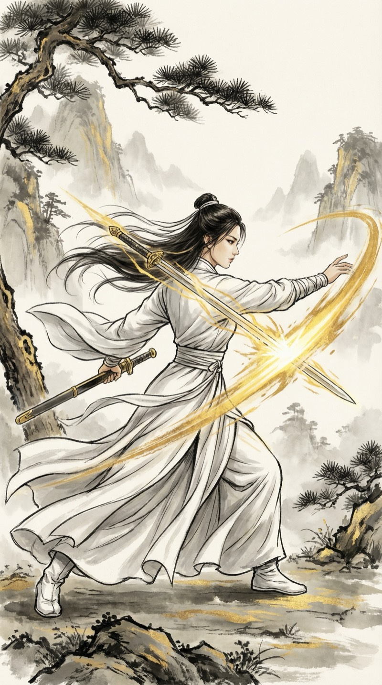
江湖
那一甩头，分明是峨眉剑法第三式——"落英飘剑"。剑气扫过，我的衣角都在抖。
强。比我预想的还强。但也没强到让我想跑。
现实
会议室门开了。一个秃顶的中年男人坐在长桌尽头，笑眯眯的，像个弥勒佛。
"来来来，坐坐坐。我是马东来，叫我马哥就行。"
声音慢条斯理，像在泡功夫茶。
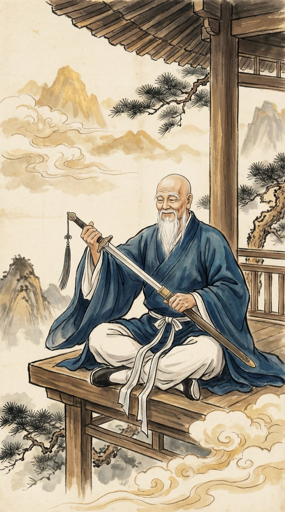
江湖
武当派长老。看似人畜无害，实则深不可测。那缓慢抽出太极剑的动作——他在试探我的底线。
投资人说"坐坐坐"，翻译成江湖话就是——"让我看看你有几斤几两"。
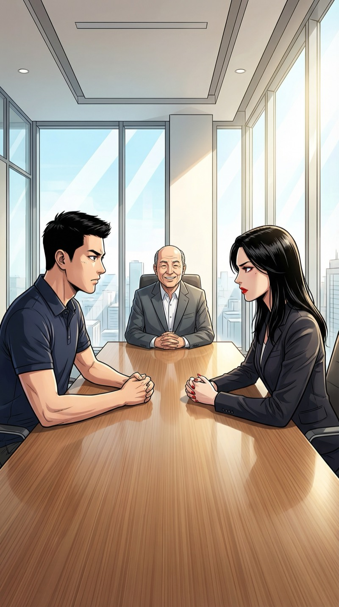
现实
我坐左边，林可坐右边，马哥坐中间。落地窗外是整个浦东天际线。
气氛微妙。我和林可之间的空气，能拧出水来。而马哥在中间笑得像看戏一样。
现实
"这样吧——你们俩，各十分钟，当面展示。我想看看实力对比。"
我心里"咯噔"一下。当面PK？这是……
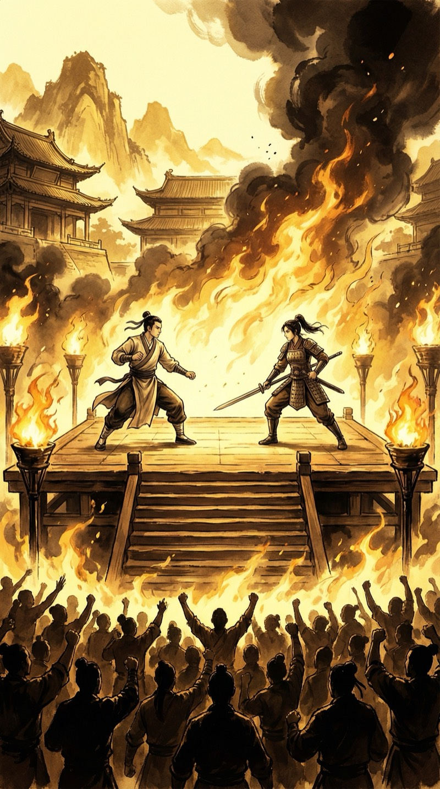
江湖
擂台赛！这老头要我和峨眉的人当场比武！
火把在四周燃烧，人群在下方注视。这不是普通的路演——这是华山论剑的资格赛。
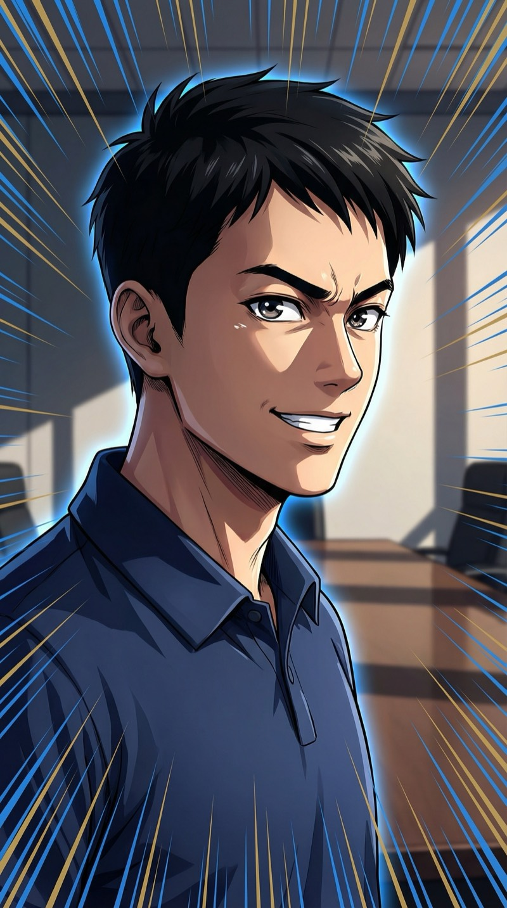
决策点
⚔️ 决策二：擂台赛
A. 拒绝，要求单独展示（保护商业机密）
B. 接受挑战，正面刚
擂台赛？正合我意。
"没问题，马哥。女士优先——林总先请。"
林可看了我一眼，眼里第一次有了一丝正视。
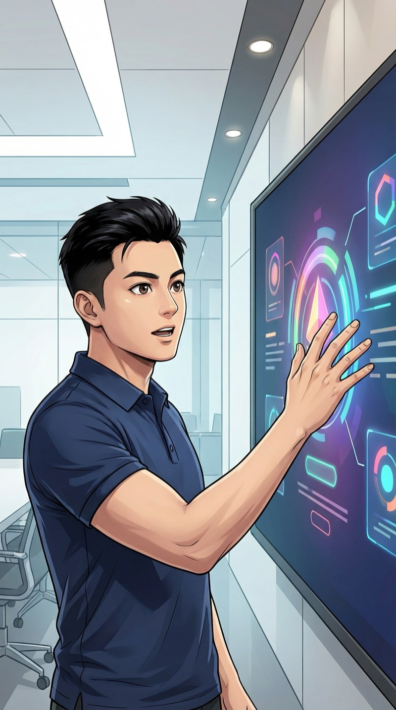
现实
轮到我了。打开笔记本，连上投影。
好，深呼吸。三个月的心血，就看这十分钟。
"我们做的是AI驱动的供应链优化……"
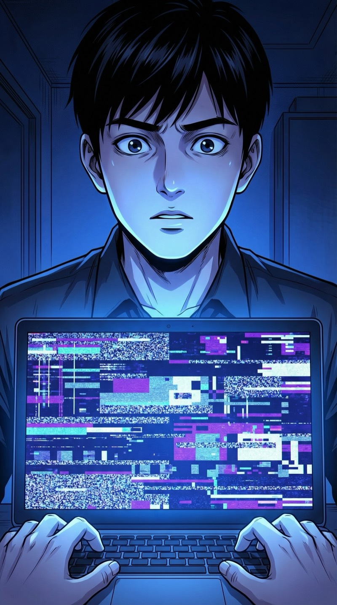
现实
讲到第三页——屏幕闪了一下，蓝了。
不。不不不不不。你不能在这个时候死。你不能——
现实
余光看到林可嘴角上扬了两毫米。两毫米，但在我眼里像两公里。
她在笑。她在等着看我出丑。
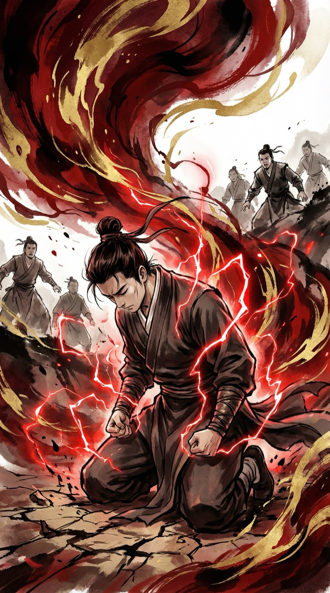
江湖
内力不稳！走火入魔！
真气在体内乱窜，经脉似乎要炸开。擂台下的观众开始窃窃私语。峨眉派的人已经在准备庆功了。
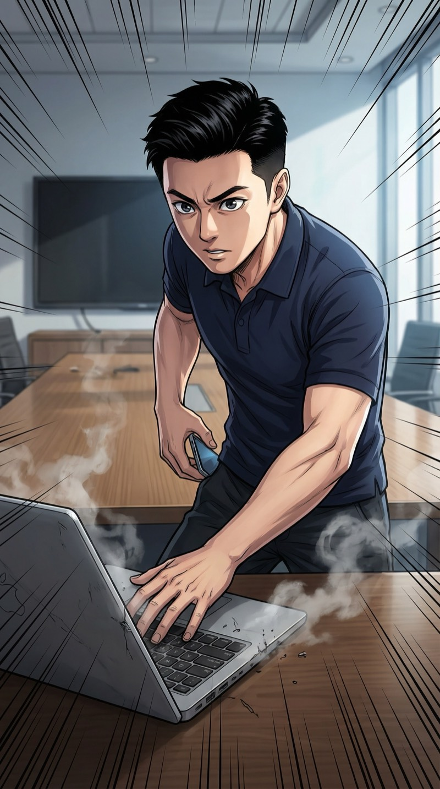
决策点
⚔️ 决策三：笔记本死机，如何挽救？
A. 用白板手画，把bug变feature讲
B. 掏手机，现场live coding修bug
不。我是黑客。我不怕bug，bug应该怕我。
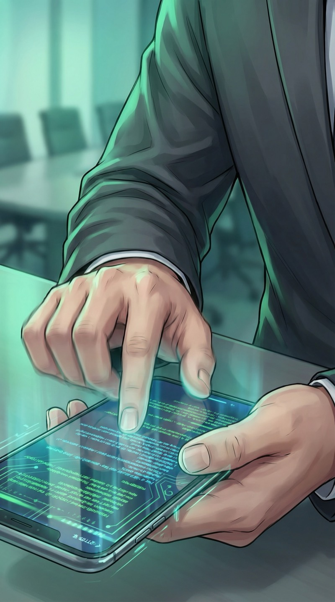
现实
我掏出手机，连上投影，手指在屏幕上飞舞。
"各位稍等十五秒。"
终端打开，SSH连进服务器，三行命令，重启服务。十二秒。
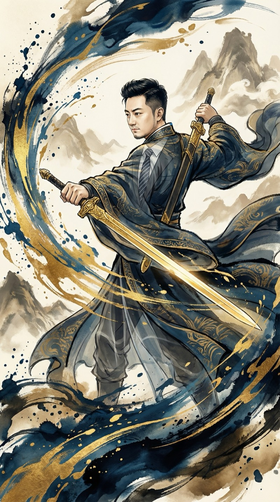
江湖
当场亮剑！走火入魔之际，他竟然——强行逆转真气，拔剑反击！
剑出鞘的瞬间，所有人都安静了。这不是蛮力——这是对内力的绝对掌控。
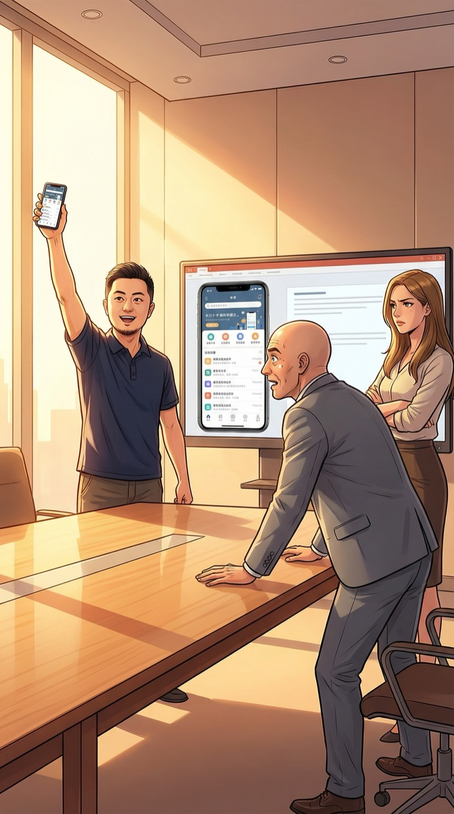
现实
屏幕亮了。数据流动，图表渲染，demo完美运行。
"抱歉，刚才是服务器的一个小问题。现在我们继续。"
马哥身体前倾了。林可的笑容凝固了。好，这才对。
现实
林可的展示很强。PPT精美，数据扎实，客户案例一个接一个。
得承认，她有实力。DataEdge比我先跑了两年，客户积累不是盖的。但她的产品……我看到了三个技术债。她自己可能都不知道。
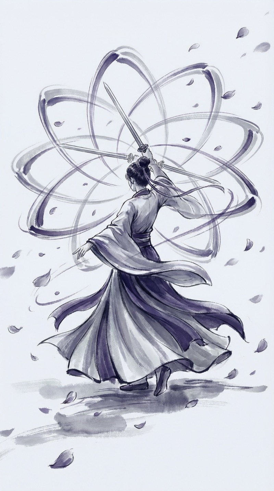
江湖
峨眉剑法，招式华丽，剑花如雨。但——花架子多了些。有三个破绽，她自己看不见。
破阵术告诉我，她的第七式和第十二式之间有0.3秒的空档。这个漏洞，将来会要她命。
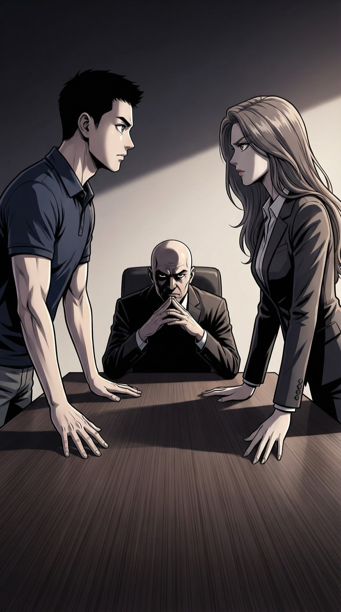
现实
展示结束。我和林可隔着会议桌对视。空气中有火药味，但也有一种奇怪的惺惺相惜。
她是对手，但她是值得尊重的对手。
现实
"嗯……不错，不错。你们都很有意思。"
马哥摸着下巴，笑容变得意味深长。
"让我想想。这个决定不能草率。"
他在笑。但那笑容后面藏着什么？
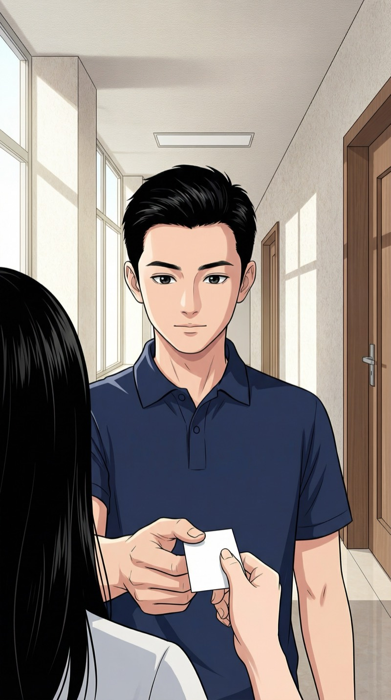
决策点
散会。走廊上，林可叫住我。
"朱总，你的live coding挺有意思。不如……我们合作？"
⚔️ 决策四：峨眉派抛出橄榄枝
A. 拒绝——"我不跟对手合作"
B. 接名片，礼貌回应但不承诺
有意思。峨眉掌门主动递橄榄枝？我不把路堵死——但也不会傻乎乎地跳进去。
"可以聊聊。回头联系。"
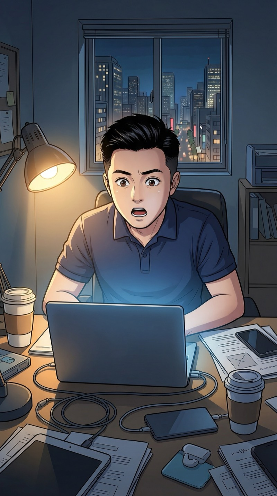
现实
晚上十一点，我的小破办公室。桌上是泡面和红牛。
今天的表现……还行吧。至少没丢人。那个live coding的场面，应该给马哥留了印象。
我习惯性地刷了下邮箱——
· · ·
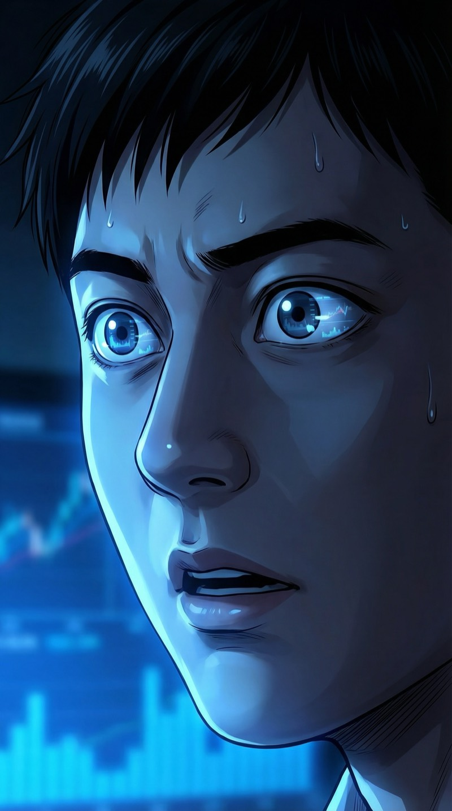
现实
马哥的邮件。打开——
这不是TS。这是……一份名单？
AI赛道所有创业公司的实力排名。NexusAI在上面，第十七位。DataEdge第三。但让我后背发凉的不是排名——
是我们公司名字旁边，那个我从没见过的符号。
《商道江湖》第一章 · 完
第二章：华山论剑 · 敬请期待
EXP-720 | Trinity V3